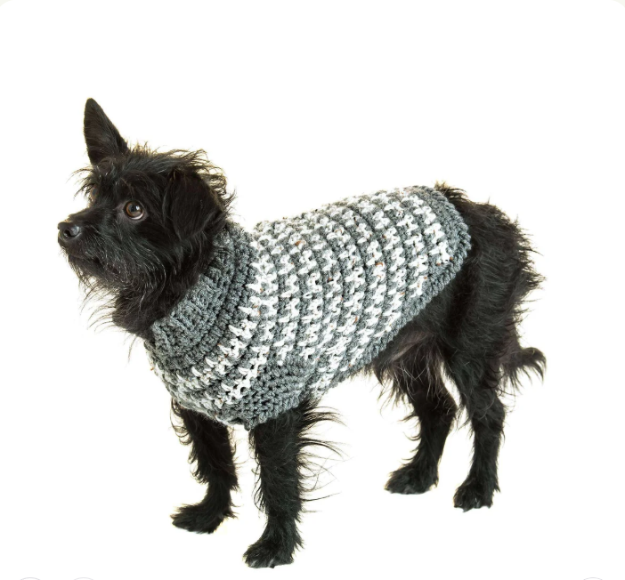
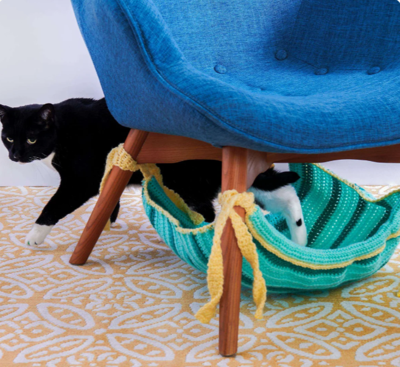
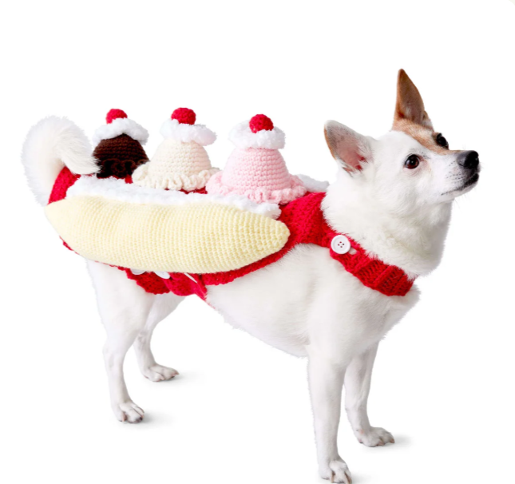
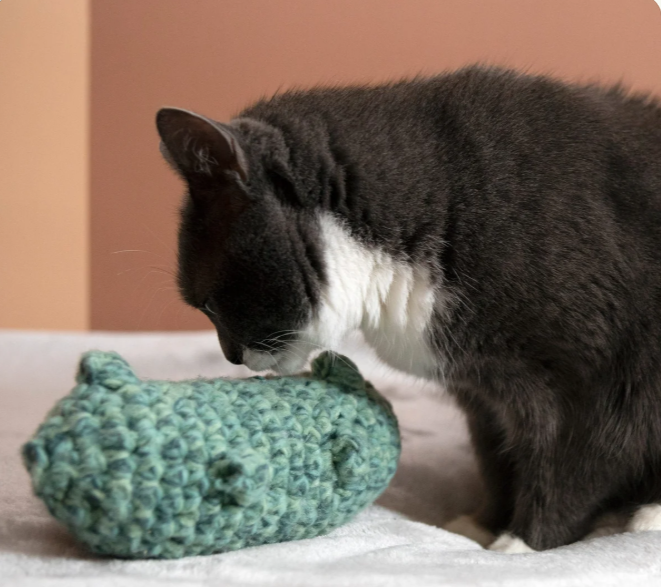
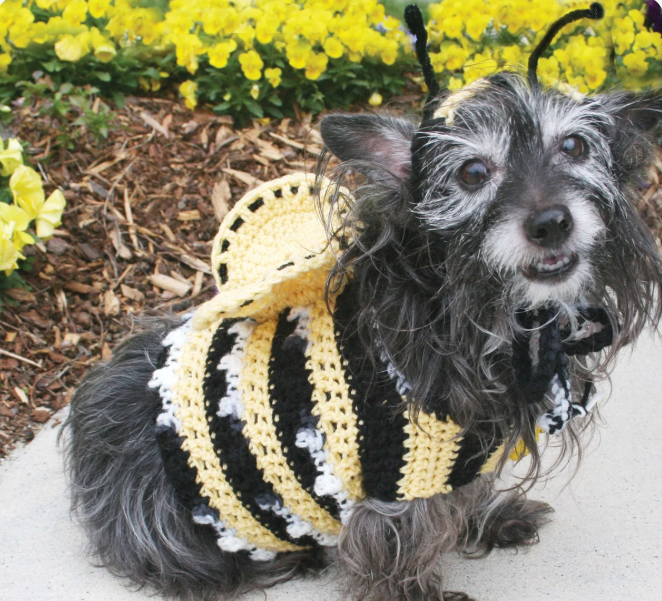
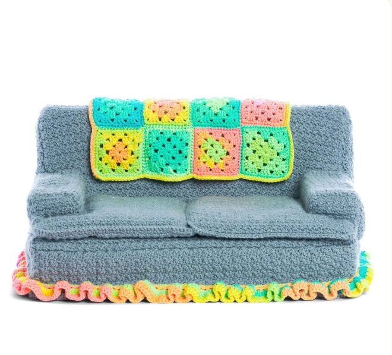

Free Patterns for Pets
Are you looking to create crochet patterns for your beloved pets? You've come to the right place!

Houndstooth Dog Sweater
Beginner-friendly pattern for a warm and stylish houndstooth dog sweater. This cozy design helps keep your furry friend comfortable on chilly days while adding a classic handmade touch to their wardrobe.

Pet Hammock
Beginner-friendly pattern for a cozy hammock designed for your pets to relax and nap in. Its comfortable design gives cats and other small pets a fun place to lounge while saving space in your home.

Banana Split Dog Costume
Intermediate crochet pattern for a fun banana split costume for your dog. With its playful dessert-inspired design, this costume is perfect for photos, parties, holidays, or simply giving your pup a cute new look.

Pickle Cat Toy
Beginner-friendly pattern for an adorable pickle-shaped cat toy. This fun project is quick to make and creates a playful toy that can provide your feline friend with hours of entertainment.

Bumble Bee Dog Costume
Intermediate crochet pattern for an adorable bumble bee costume for your dog. The striped design and playful wings give your pet a buzzing new look that is perfect for photos, parties, or special occasions.

Cat Couch
Advanced crochet pattern for a cozy miniature couch designed especially for cats. This detailed project creates a comfortable lounging spot for your feline friend while adding a colorful and handmade piece of furniture to your home.